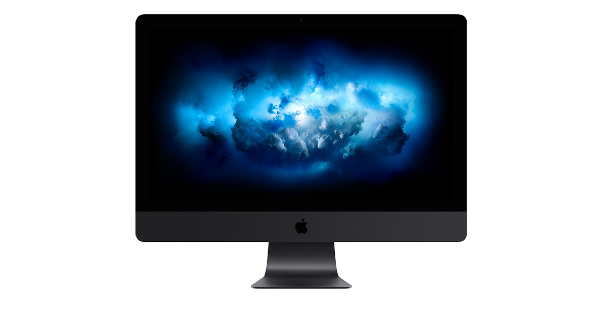
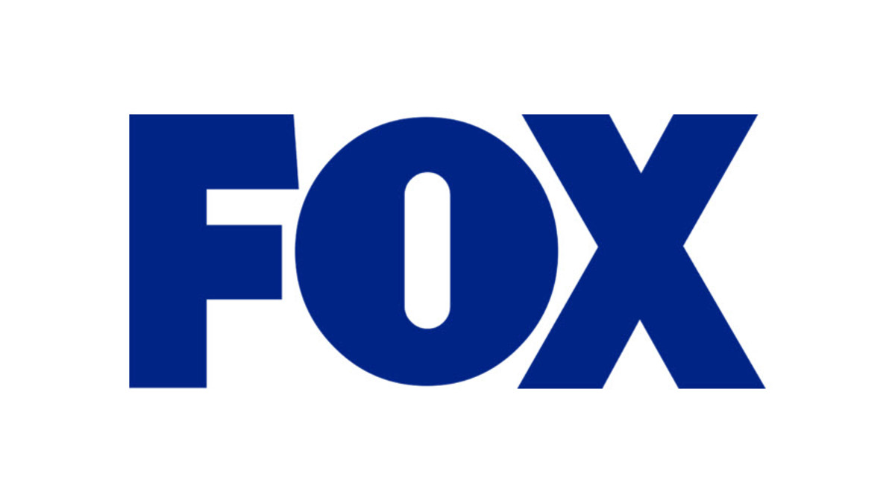
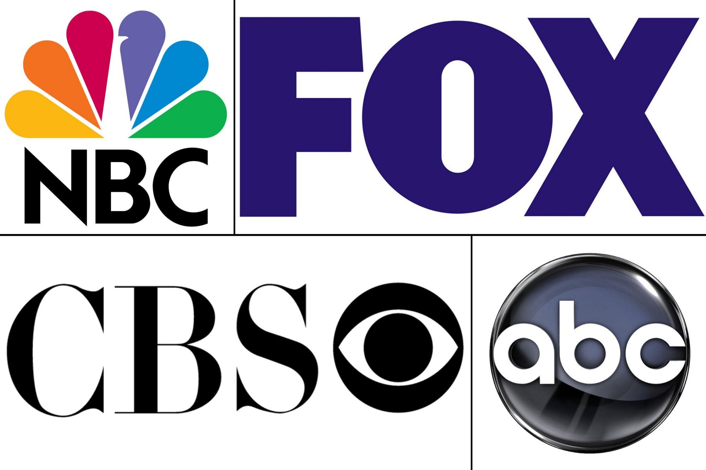

2018's Most Popular TV Networks
Overview | Media | Author
Overview
Besides social media the next best way to reach people is by television. In 2018 the top four networks in America were ABC, Fox, NBC and CBS. They had a combined total of 23 million viewers throughout the networks.
These four networks were more popular than other netowrks by a landslide.

Shown below is a table of the total of viewers from these popular networks. The information was formed from a survey by Statista.
| |
Most popular nextwork viewers |
| Fox |
4.4 million |
| NBC |
7.8 million |
| CBS |
10 million |
| ABC |
7 million |

There are many ways that TV networks are influincing and impacting out lives. Here are some of the ways.
- TV Networks impact on Politics
Politicians use TV networks to advertise their beliefs and to get voters on board with their plans. The use of television allows people to see what the person is like in video which can be more reassuring to vote for them.
- TV Networks impact on Society
Having television and shows that now have different views is a way to change society. More shows are being open to differnt lifestyle choices which shows people that they can do anything they want.
- Tv Networks impact on Commerce
Tv networks are able to sell products on their shows and through advertisements in commercials breaks. This impacts commerce because its benefiting the economy with the inflow of money.
- TV Networks impact on the Enviroment
By spreading the word about how things are becoming we can make a change

Tv Networks have negatives, some examples include:
- Antisocial
- Lack of exercise
- Depression and Anxiety
- Missing Out
- Unrealistic Expectations of Life
- Addiction
Since the beginning Tv Networks have changed from being in black in white to color, to the future. Now we can record any show from any TV network allowing their number of viewers to be higher than ever.
href="https://www.indiewire.com/2018/12/network-ratings-top-channels-espn-cnn-fox-news-cbs-nbc-abc-1202030597/"
 JulianaKrueger
JulianaKrueger